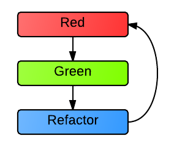
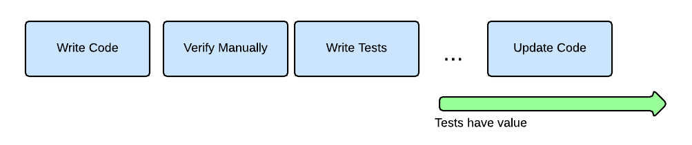
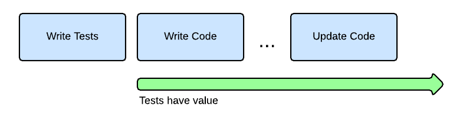
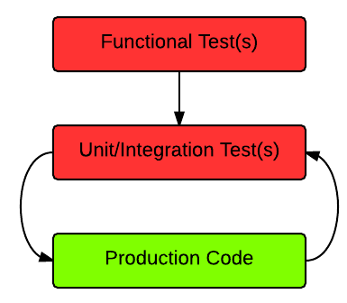
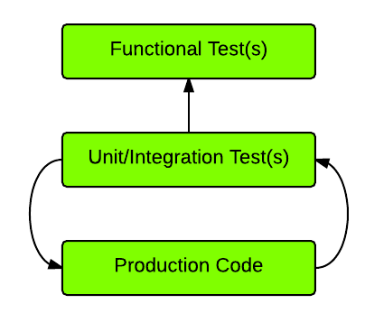

Advantages of Test Driven Development
Created by Craig Atkinson | Chief Technologist | Object Partners

About Me
- Craig Atkinson
- Chief Technologist, OPI
- 7 years of Test Driven Development
Agenda
- TDD Intro
- Five Advantages
- Getting started with TDD
- Test Driven Examples
TDD Intro
TDD vs the usual way
Standard development testing
- Write code
- Manually verify code works
- Write automated tests
- Run tests, they pass
How is TDD different?
- Write automated tests
- Run tests, they fail
- Write code
- Run tests, they pass
TDD Cycle

TDD Advantages
#1 Tests valuable longer
Traditional test value

Test value with TDD

#2 Know the test is valid
Test will really catch errors
Don't trust a test you've never seen fail
Test fails for the right reason
Expected assertion failure
Reproduce and fix bugs
Know your fix is correct
#3 Easier to write testable code
Writing tests after code can be painful
You may even have to refactor the code to be testable
#4 Help prevent code rot
Big refactoring can be hard to sell
Risk of breaking existing functionality
Test suite acts as safety net
Cleanup and refactor without fear
#5 Future code changes are faster and easier
Easier to respond to customer needs
- Functionality changes
- Bug fixes
Update libraries & frameworks
Tests catch incompatibilities or regressions
Bonus Advantage: Executable documentation
Test suite documents code behavior
Code comments can become stale
Getting started with TDD
Minimize what's new
Start with libraries and testing frameworks you're familiar with
TDD needs no approval
It's your own personal choice
Ability to write tests
Testing frameworks in place
Don't need to like testing
Though be warned, you may start to like it
Data-driven unit testing framework helpful
- Run same test body with different inputs and outputs
- Reduce test duplication
TDD Examples
Example of bug fix
Broken calculator average
class Calculator {
BigDecimal average(List numbers) {
return numbers.sum() / 2
}
}
Existing incomplete test
def 'should average two numbers'() {
given:
List numbers = [5, 15]
when:
BigDecimal average = new Calculator().average(numbers)
then:
assert average == 10
}
Reproduce error with additional test
def 'should average three numbers'() {
given:
List numbers = [3, 6, 9]
when:
BigDecimal average = new Calculator().average(numbers)
then:
assert average == 6
}
Test fails (red)
CalculatorSpec > should average three numbers FAILED
Condition not satisfied:
average == 6
| |
9 false
Fix code
class Calculator {
BigDecimal average(List numbers) {
return numbers.sum() / numbers.size()
}
}
Tests pass (green)
Refactor
Clean up source and/or test code
Similiar tests
Tests only differ by inputs and outputs
Single data-driven test
@Unroll
def 'should average numbers'() {
when:
BigDecimal average = new Calculator().average(numbers)
then:
assert average == expectedAverage
where:
numbers || expectedAverage
[5, 15] || 10
[3, 6, 9] || 6
}
Example of new feature
Add 'range' method to Calculator
Write failing tests
@Unroll
def 'should calculate range of numbers'() {
when:
BigDecimal range = new Calculator().range(numbers)
then:
assert range == expectedRange
where:
numbers || expectedRange
[1, 3] || 2
[11, 20, 31] || 20
}
Tests fail (red)
CalculatorSpec > should calculate range of numbers[0] FAILED
groovy.lang.MissingMethodException:
No signature of method: Calculator.range() is applicable for argument types:
(java.util.ArrayList) values: [[1, 3]]
Implement 'range' method
BigDecimal range(List numbers) {
return numbers.last() - numbers.first()
}
Tests pass (green)
Additional test cases?
What if list isn't sorted?
Add test case
@Unroll
def 'should calculate range of numbers #numbers'() {
when:
BigDecimal range = new Calculator().range(numbers)
then:
assert range == expectedRange
where:
numbers || expectedRange
[1, 3] || 2
[11, 20, 31] || 20
[12, 28, 15] || 16
}
Run test, new test case fails
CalculatorSpec > should calculate range of numbers [12, 28, 15] FAILED
Condition not satisfied:
range == expectedRange
| | |
3 | 16
false
Fix 'range' method
BigDecimal range(List numbers) {
List sortedNumbers = numbers.sort(false)
return sortedNumbers.last() - sortedNumbers.first()
}
Tests pass (green)
Refactor (optional)
Done with feature
Webapp Example
Implement user registration
Multiple TDD cycles
Start with high-level tests, move to lower-level tests
Functional/unit test cycle

Functional/unit test cycle

Write happy-path browser functional test
- Navigate to registration page
- Enter email and password
- Click button to submit registration
- Verify user record created in database
Run test, it fails
Registration page doesn't exist
Create registration page
Form that passes email & password to non-existent backend 'register' method
Write backend tests for 'register' method
Verify user record is created in database
Run backend tests, they fail
'register' method doesn't exist
Implement 'register' method
Run backend tests, they pass
Run browser functional test, it passes
Summary of working feature
- User can register with new email and password
Registration feature complete?
What about errors?
Write browser functional test for error case
- Create user in database
- Go registration page
- Fill in registration form with same email and submit
- Verify error message displayed
Run functional test, should fail
Missing error message
Update page
Add display of error messages from backend
Write failing backend test
Registering with existing email
Update backend 'register' method
Add check for existing user with email
Run backend then functional tests (green)
Summary of working feature
- User can register with new email and password
- Registering with existing email displays helpful error message
Iterate backend test/code cycle for more errors
Invalid email, weak password, etc.
test-driven webapp feature
Additional Resources
- Test Driven Development: By Example by Kent Beck
- Behaviour Driven Development with Javascript by Marco Emrich
Summary
- TDD gives you more value with less pain
- You can start TDD today
Q&A
craig.atkinson@objectpartners.com